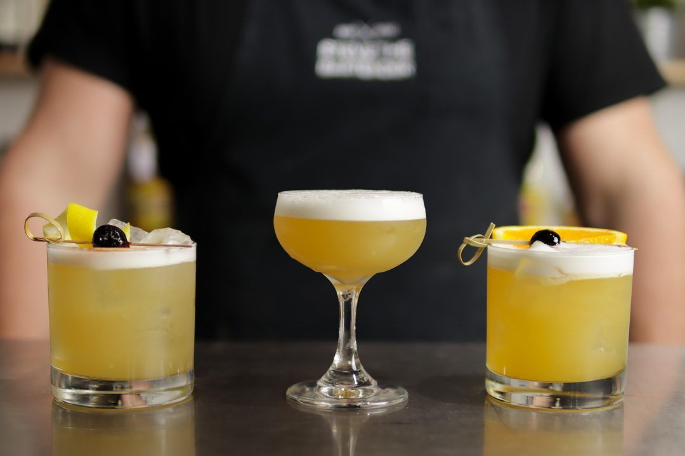

Whisky Sour

A Brief History
The whiskey sour was first seen in print in Jerry Thomas’ 1862 book The
Bartender’s Guide but of course it had been around some time before Jerry’s
book. Jerry’s recipe called for a wine glass of bourbon or rye, the juice of
half a lemon and a large teaspoon of powdered white sugar dissolved in
sparkling water.
INGREDIENTS
- 60 ml Rittenhouse Ryde 100 Proof
- 30 ml Lemon Juice
- 15 ml 2:1 Rich Simple Syrup
- 15 ml Orange Juice
- 15 ml Egg White
INSTRUCTIONS
- Combine all ingredients to your cocktail shaker
- Dry shake (no ice)
- Wet shake (with ice)
- Strain over fresh ice into a double old fashioned glass
- Garnish with a slice of orange and skewered maraschino cherry